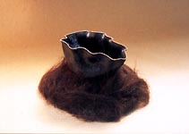

| Rascal Ware, Hairy Potter and Biloxi

This is the third chapter in a series of articles by Don Pilcher
on some of the characters that have been inspiring him and helping
him with creating his ceramic works. Feedback is welcome: Don Pilcher:
.
Rascal Ware, Hairy Potter and Biloxi - Chapter
3
As you may recall, Junior Bucks, our owner and boss, is something
of a do-gooder. In that capacity, he spends a lot of time “out
among ‘em”, as he puts it. So it was in this way that
he met and hired one Hairy Potter. And Hairy is. He’s got
a body just like a goddamn bear, except that he shaves his head
and neck. He’s huge, very tan, wears an earring and has the
same body fat as a nine-inch hard brick. Surprisingly enough, he
speaks with a precise British accent. What are the chances?
Hairy learned his pottery skills in the penitentiary where he served
13 years for commodities fraud. It seems that he had pumped the
profit potential of futures in wood and ore and when the bottom
fell out of the resale market, his investors sued and won. Hairy
insists he’s innocent and that he was just perfecting a sales
strategy he’d learned from Barf Dark or some other art dealer
you never heard of.

What Hairy will eventually do at Rascal Ware is not yet certain,
but it could be scary. He doesn’t actually use much glaze.
Instead, just like him, his work is covered with hair. We don’t
know where the hair comes from, and it drives our studio dog, Shakespeare,
about nuts. Between the two of them, we don’t have a single
drain that really works as it should.
By December, it was clear that the Rascal Ware Pottery had had
a pretty good year and, in lieu of a bonus, Junior said he’d
treat us all to a long weekend in Biloxi, Mississippi. Biloxi, of
course, is the home of the late, great George Ohr; no relation.
We visited the Ohr Museum, where I left a couple of “business
cards”. They didn’t seem amused. Then, with directions
from a local potter, we dug some of the clay Ohr may have used less
than a mile from his studio. It’s found along the Tchoutakaofuffa
River, pronounced shoot-uh-kuh-buff. The clay is so alkaline it
could suck water out of a trailer hitch.
Some young potters may not even recognize clay as it comes from
nature. It is usually nothing like the material that you find in
bags, dry or moist. That stuff is milled, air-floated, levigated,
blended and maybe pugged. In contrast, clay in its natural state
contains large rocks, small animals, sand, roots, grass and, in
this case, fishheads.
When you stand at the riverbank and dig, time is wonderfully compressed.
This site is little changed from Ohr’s day, 100 years ago…with
the exception of the kudzu and the huge shadow of the local Wal-Mart.
Pilcher thinks that finding kudzu and Wal-Mart in the same sentence
is worth pondering. But in truth, he’d ponder a fucking parking
ticket if he thought no one was watching. There is something moving
about taking clay from a pit that might have been turned into (I
know, but I’m weak) some of the great pottery of the last
century. The compression of time creates a palpable connection.
We dug enough clay for about a hundred pots and then went looking
for Hairy who had long since taken off. Real labor doesn’t
appeal to him. No wonder. That night I had an extremely vivid dream
about George Ohr. I won’t bore you with the details except
to say that before it was over, his legendary talent for self-promotion
had worked on me.
We found Hairy at the big casino that has its own collection of
Ohr pots and displays them right in the main lobby. Hairy wasn’t
hanging around as he had just met Doncy, a gal from Florida, who
had really cleaned up at the crap tables that afternoon. They soon
took off together, leaving the casino with just enough money to
pay its light bill. The only thing the rest of us cleaned up were
our plates from the pork buffet. You have to be careful at those
buffets; too much can trigger vivid dreams. You can scar yourself.
If you want to see more of these Rascal Ware pieces you can go
to the gallery at www.terraincognitostudios.com.
If you want to contact us directly, you can e-mail us at dpilcher2@juno.com.
continue...
About Don Pilcher: American studio potter and author.
Pilcher earned a BFA at the Chouinard Art Institute in Los Angeles
in 1964 and an MFA at the Rhode Island School of Design in 1966.
He taught at the University of Illinois at Urbana-Champaign from
1966-99, where he is now Professor Emeritus. He makes wheel-thrown
and altered functional ware. Images & text ©
Don Pilcher. Contact:
.
Rascal Ware Chapter 1/Español
Rascal Ware Chapter 2/Español
Rascal Ware Chapter 3
Rascal Ware Chapter 4
Rascal Ware Chapter 5
Rascal Ware Chapter 6
More Articles
|
{kind=link}
{kind=link}
{kind=link}
{kind=link}